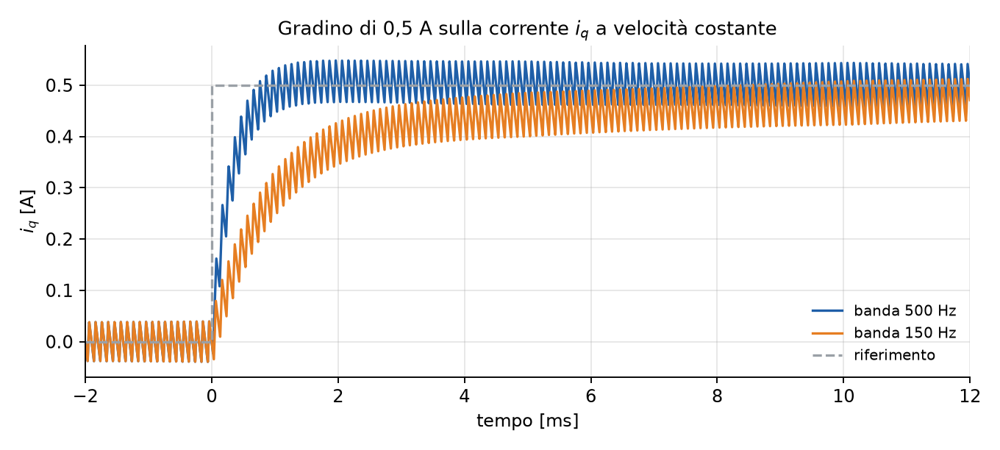
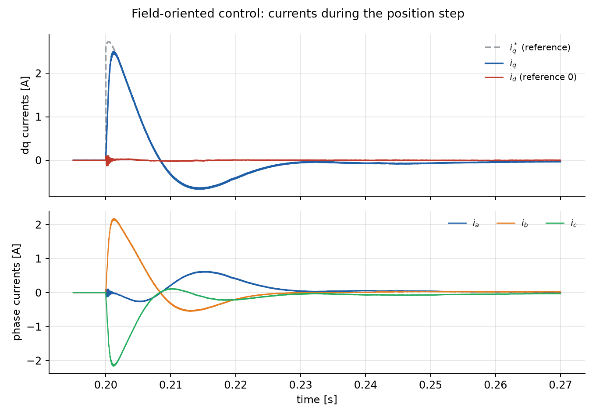
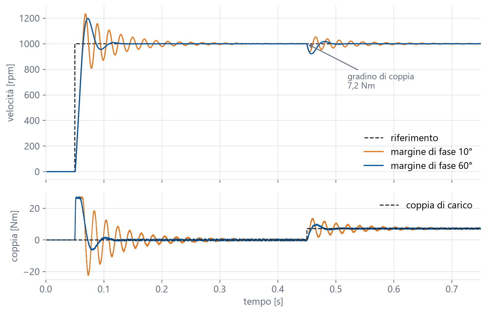
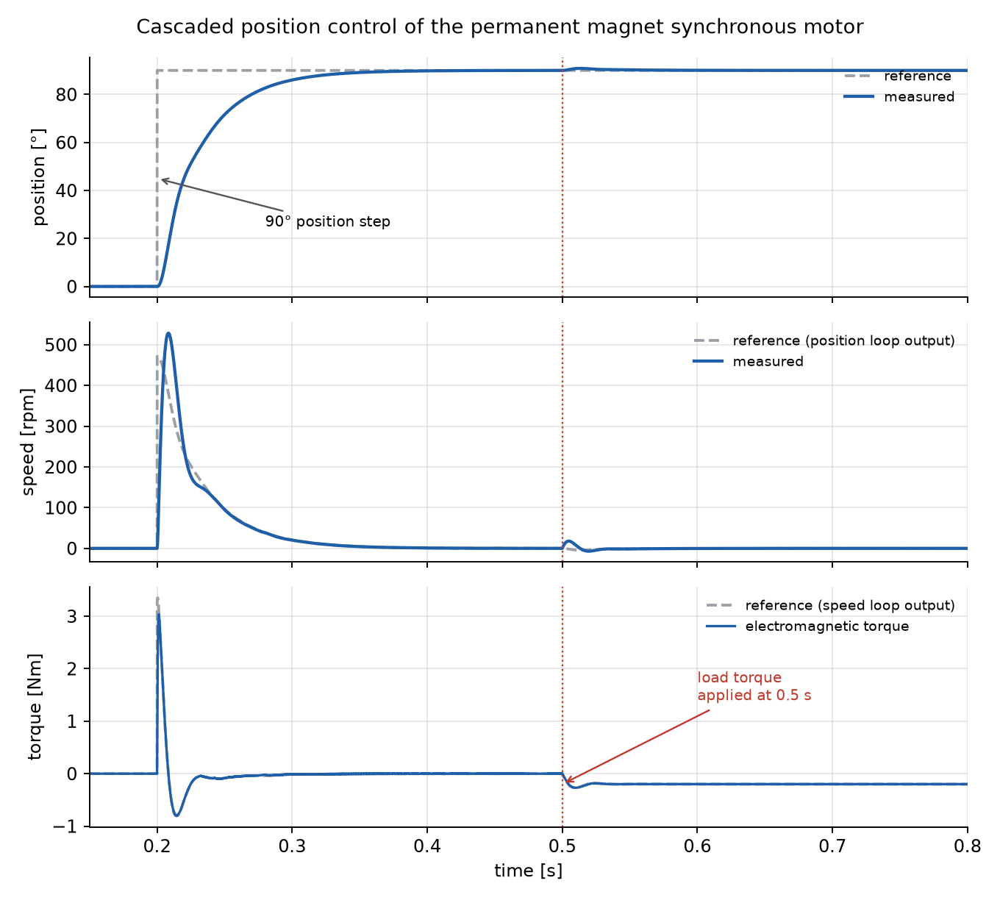

The goal
The final project of the course asked us to size, simulate and verify a three-phase drive with a two-level inverter and a surface permanent magnet synchronous motor (SPM). The starting point was a basic model with current control only; each student was given a different commercial motor, in my case a PE1R 90 S6 rated 7.2 Nm at 1000 rpm.
The work took four steps: adapting the model to the real motor, verifying the current control, adding torque control, then speed and position control.
From the datasheet to the model
From the catalogue I derived the electrical and mechanical parameters of the machine. The synchronous inductance is obtained from the leakage and magnetising inductances, while the magnet flux comes from the no-load voltage: at zero current the phase voltage depends only on the magnets and on the electrical speed. The result is λPM ≈ 0.754 Vs and a torque constant kT = 3/2 · p · λPM ≈ 3.39 Nm/A.
The motor and the inverter (6 IGBTs with freewheeling diodes, 560 V DC link, 5 kHz switching) are modelled with Simscape Electrical components. The control, instead, is entirely discrete-time and runs once per PWM period, as on a real microcontroller or DSP.

Control architecture
The loops are in cascade: each one generates the reference for the inner one. To stay stable and decoupled, each loop has a bandwidth of about one tenth of the loop inside it.

Current and torque control
The given current regulator was a PI in the d-q frame with anti-windup and saturation at the maximum inverter voltage. I verified it with three tests: steady-state reference tracking, step response and no-load voltage. With a 500 Hz bandwidth the current goes from 10 to 90% of the step in about 0.6 ms; reducing the bandwidth to 150 Hz takes about 2.5 ms. At zero current and rated speed the required voltage is entirely on the q axis and is about 284 V line-to-line, within about 2% of the 290 V in the catalogue: a confirmation that the parameters derived from the datasheet are consistent.

Torque control is a direct pass-through: in an SPM motor torque depends only on iq, so it is enough to divide the requested torque by kT, keeping id = 0. Precisely because it adds no dynamics, the torque loop has the same bandwidth as the current loop.

Speed control
For the speed loop the mechanical model changes: the speed is no longer imposed on the motor, which instead receives a load torque, and the speed results from the balance with the inertia. I designed a PI with anti-windup and saturation at the motor's maximum torque, computing the gains from the open-loop function to get a 50 Hz crossover and a 60° phase margin.
The tests check the step to 1000 rpm, the effect of the phase margin, the maximum speed reachable before saturation, and the dynamic stiffness: when a torque step equal to the rated torque arrives, the speed drops for an instant and the PI brings it back to the reference.

Position control
Seen from outside, the closed speed loop behaves like a pure integrator. For this reason a proportional regulator is enough for position, with a 5 Hz crossover. I verified it with a π rad step and with sinusoidal references: at 1.5 Hz the position tracks the reference well; at 4 Hz, close to the bandwidth, delay and amplitude reduction appear.

The test that best shows the whole cascade at work is a position step followed by a load disturbance. The position loop asks for speed, the speed loop asks for torque, which gets close to the motor's limit; the position reaches the reference without overshoot and, when the load torque hits the shaft, the system compensates it in about 30 ms.

What I learned
This project showed me up close how a real drive is built, from power electronics to the control loops. I became familiar with discrete-time control synchronised with the PWM, the same scheme that runs on the microcontrollers and DSPs of commercial inverters, and with the method for designing cascaded loops: choosing the bandwidths, deriving the gains from the phase margin and protecting the regulators with saturations and anti-windup. I also learned not to trust parameters until I have verified them: comparing the simulation with catalogue data was the simplest way to notice whether the model was consistent.